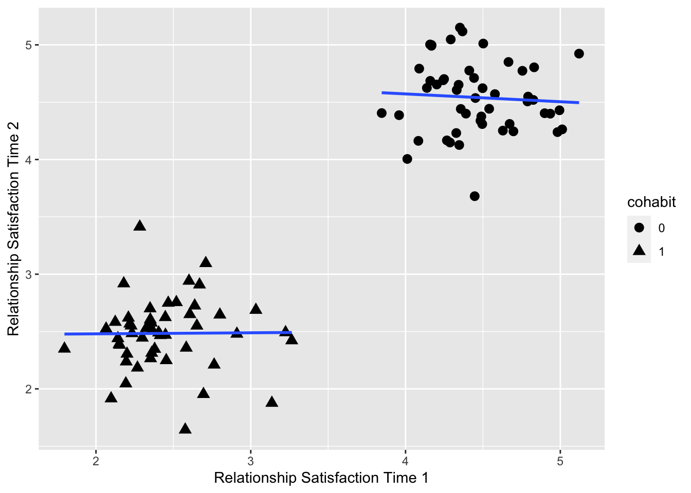
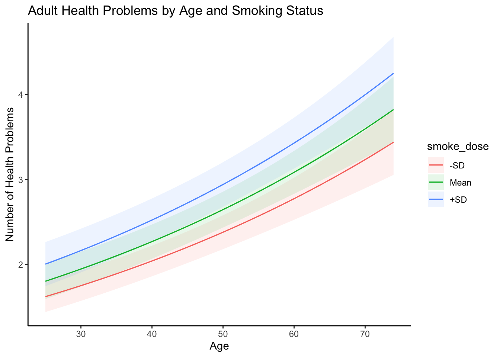

10.5 marginaleffects: Predictions
Predictions
In the context of these examples we will consider predictions to be the predicted value of an outcome of interest produced from a fitted model for a given scale and combination of values of the predictor variables.
For example, let’s take a look at the predicted number of health problems for the first six individuals in the sample.
First, let’s get the predicted number of health problems on the type = "link" scale:
##
## Estimate Std. Error z Pr(>|z|) S 2.5 % 97.5 %
## 1.83 0.0857 21.4 <0.001 334.4 1.66 2.00
## 1.46 0.0664 21.9 <0.001 351.7 1.33 1.59
## 2.07 0.0722 28.6 <0.001 595.9 1.92 2.21
## 1.89 0.0993 19.0 <0.001 265.5 1.69 2.08
## 1.47 0.0818 17.9 <0.001 236.8 1.31 1.63
## 1.49 0.0659 22.6 <0.001 373.8 1.36 1.62
##
## Columns: rowid, estimate, std.error, statistic, p.value, s.value, conf.low, conf.high, morbidityw1, female, health, age, smoke_dose, heavydr2, obese, fampos, friendpos, abuse_rare, abuse_freq1, abuse_freq2
## Type: linkOr we can look at the type = "response" scale (e.g. raw count):
##
## Estimate Std. Error z Pr(>|z|) S 2.5 % 97.5 %
## 6.24 0.535 11.7 <0.001 102.2 5.19 7.29
## 4.29 0.285 15.0 <0.001 167.6 3.73 4.85
## 7.89 0.569 13.9 <0.001 142.6 6.77 9.00
## 6.61 0.657 10.1 <0.001 76.8 5.33 7.90
## 4.34 0.355 12.2 <0.001 111.7 3.64 5.04
## 4.44 0.293 15.2 <0.001 170.2 3.87 5.02
##
## Columns: rowid, estimate, std.error, statistic, p.value, s.value, conf.low, conf.high, morbidityw1, female, health, age, smoke_dose, heavydr2, obese, fampos, friendpos, abuse_rare, abuse_freq1, abuse_freq2
## Type: responseWe may also be interested in looking at what is often called the Adjusted Prediction at the Mean (APM).
The APM is calculated with all continuous regressors held at their mean, and all categorical variables held at their mode. To do this we can use the datagrid function in marginaleffects as in
##
## Estimate Std. Error z Pr(>|z|) S 2.5 % 97.5 % female health age
## 2.6 0.106 24.4 <0.001 436.1 2.39 2.81 1 0.387 47
## smoke_dose heavydr2 obese fampos friendpos abuse_rare abuse_freq1 abuse_freq2
## 11.9 0.247 0 3.42 3.22 0 0 0
##
## Columns: rowid, estimate, std.error, statistic, p.value, s.value, conf.low, conf.high, morbidityw1, female, health, age, smoke_dose, heavydr2, obese, fampos, friendpos, abuse_rare, abuse_freq1, abuse_freq2
## Type: responseBeyond Individual and Aggregate Predictions
It can often be more interested to look Average Adjusted Predictions (AAP) for different subgroupings of our data. The marginaleffects package calculates AAPs in the following manner:
- Create a new dataset with each of the original regressor values, but fixing some regressors to values of interest.
- Take the average of the predicted values in this new dataset.
We can obtain AAPs by applying the avg_predictions() functions or by argument:
##
## Estimate Std. Error z Pr(>|z|) S 2.5 % 97.5 %
## 2.71 0.049 55.3 <0.001 Inf 2.61 2.81
##
## Columns: estimate, std.error, statistic, p.value, s.value, conf.low, conf.high
## Type: responseWe can compute average adjusted predictions for different subsets of the data with the by argument.
##
## abuse_freq2 obese female Estimate Std. Error z Pr(>|z|) S 2.5 % 97.5 %
## 0 0 0 2.00 0.0646 31.0 <0.001 698.5 1.88 2.13
## 0 0 1 2.59 0.0750 34.5 <0.001 863.9 2.44 2.73
## 0 1 0 2.71 0.1104 24.5 <0.001 438.5 2.49 2.92
## 0 1 1 3.57 0.1353 26.4 <0.001 507.9 3.31 3.84
## 1 0 0 2.70 0.1133 23.9 <0.001 415.7 2.48 2.93
## 1 0 1 3.54 0.1408 25.1 <0.001 460.8 3.26 3.81
## 1 1 0 3.89 0.1887 20.6 <0.001 310.9 3.52 4.26
## 1 1 1 4.56 0.2112 21.6 <0.001 340.7 4.14 4.97
##
## Columns: abuse_freq2, obese, female, estimate, std.error, statistic, p.value, s.value, conf.low, conf.high
## Type: responseCounterfactuals
In the next example, we create a counterfactual data grid where each observation of the dataset is repeated twice, with different values of the abuse_freq2 variable, and all other variables held at the observed values.
predictions(
model4,
type = "response",
by = "abuse_freq2",
newdata = datagrid(abuse_freq2 = 0:1, grid_type = "counterfactual")
)##
## abuse_freq2 Estimate Std. Error z Pr(>|z|) S 2.5 % 97.5 %
## 0 2.53 0.0572 44.2 <0.001 Inf 2.42 2.64
## 1 3.32 0.1410 23.5 <0.001 404.9 3.04 3.60
##
## Columns: abuse_freq2, estimate, std.error, statistic, p.value, s.value, conf.low, conf.high
## Type: responseHypothesis Tests
Importantly, we can also conduct hypothesis tests using these same ideas.
For example, are the mean number of adult health problems equal for those who experienced no childhood abuse, compared to those who experienced both emotional and physical abuse?
##
## Term Estimate Std. Error z Pr(>|z|) S 2.5 % 97.5 %
## b1=b2 -0.913 0.128 -7.11 <0.001 39.7 -1.16 -0.661
##
## Columns: term, estimate, std.error, statistic, p.value, s.value, conf.low, conf.high
## Type: responseThinking back on our previous grid of predicted values:
##
## abuse_freq2 obese female Estimate Std. Error z Pr(>|z|) S 2.5 % 97.5 %
## 0 0 0 2.00 0.0646 31.0 <0.001 698.5 1.88 2.13
## 0 0 1 2.59 0.0750 34.5 <0.001 863.9 2.44 2.73
## 0 1 0 2.71 0.1104 24.5 <0.001 438.5 2.49 2.92
## 0 1 1 3.57 0.1353 26.4 <0.001 507.9 3.31 3.84
## 1 0 0 2.70 0.1133 23.9 <0.001 415.7 2.48 2.93
## 1 0 1 3.54 0.1408 25.1 <0.001 460.8 3.26 3.81
## 1 1 0 3.89 0.1887 20.6 <0.001 310.9 3.52 4.26
## 1 1 1 4.56 0.2112 21.6 <0.001 340.7 4.14 4.97
##
## Columns: abuse_freq2, obese, female, estimate, std.error, statistic, p.value, s.value, conf.low, conf.high
## Type: responseWe can test for the equivalence of any two rows of this grid using the "b1=b2" notation where the numbers match the rows used for our desired comparison.
For example, let’s say we want to test whether there is a difference in average number of health problems between obese and non-obese females who experienced child maltreatment (e.g."b6=b8")
avg_predictions(model4,
by = c("abuse_freq2", "obese", "female"),
type = "response",
hypothesis = "b6 = b8"
)##
## Term Estimate Std. Error z Pr(>|z|) S 2.5 % 97.5 %
## b6=b8 -1.02 0.172 -5.92 <0.001 28.2 -1.36 -0.682
##
## Columns: term, estimate, std.error, statistic, p.value, s.value, conf.low, conf.high
## Type: responsePlotting Predictions
It is often easier to visualize quantities of interest. To visualize predicted values we can use the plot_predictions() function from marginaleffects.
For example, lets visualize some of the predictions we analyzed previously.

We can also use some built-in arguments to look at the predicted number of health problems by respondent age and whether they were at mean, 1 SD below, or 1 SD above in terms of cigarette exposure.
Notice, the plot_predictions() function is a ggplot2 object. This means we can modify the plot as needed using ggplot2 syntax.
library(ggplot2)
plot_predictions(
model4,
condition = list("age","smoke_dose"="threenum"),
type = "response"
) + theme_classic() +
ggtitle("Adult Health Problems by Age and Smoking Status") +
xlab("Age") + ylab("Number of Health Problems")